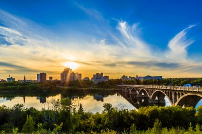

The place to visit is Saskatchewan. With over 250 amusements to visit that describe Saskatchewan’s past, art galleries that display the vide variety of culture in Saskatchewan, science centers, river cruises and many more. Outdoor activities include bird and wildlife viewing, trails to explore, water activities such as boating and canoeing, heart-pounding activities such as kayaking and ziplining across the North Battleord and Cypress hills, horseback riding through large boreal forests and miles of grass, and winter activities such as tobogganing, curling, skiing, snowmobiling, tubing, and hockey. Saskatchewan consists of many wellness and spa buildings to pamper yourself, the Manitou Springs Mineral Spa or the Temple Gardens Mineral Spa Resort. There are wide open spaces to Golf, gentle rolling hills and a putt that is mid-range to accommodate for both pros and beginners.
Saskatchewan consists of many shopping opportunities, modern malls in the downtown area that sell many items, gifts and pottery. Saskatchewan’s community spirit is remarkable and perfect for events in the area. Saskatchewan has over 100,00 lakes perfect for fishing, experienced fishers will help you and guide you through the lakes and other settings of such natural beauty. Places to visit include Saskatchewan’s largest city Saskatoon, or Regina, there are also other cities that include places to shop, museums, theatres to watch the newest movies, rivers to go boating and fishing, nightlife for partying, over 35 provincial parks, 100,00 lakes and great food and drink. There are national parks to visit, municipal and regional parks to explore.
Saskatchewan is a great place to vacation and is open to everyone who is willing to explore it. With traditional hotels to stay at, or motels. Saskatchewan welcomes anyone and everyone to visits. There are places that range from family-friendly resorts and ranch locations to cabins in the wilderness cabins and northern lodges.